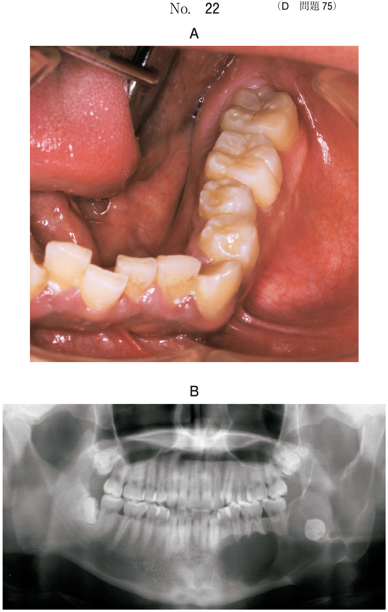
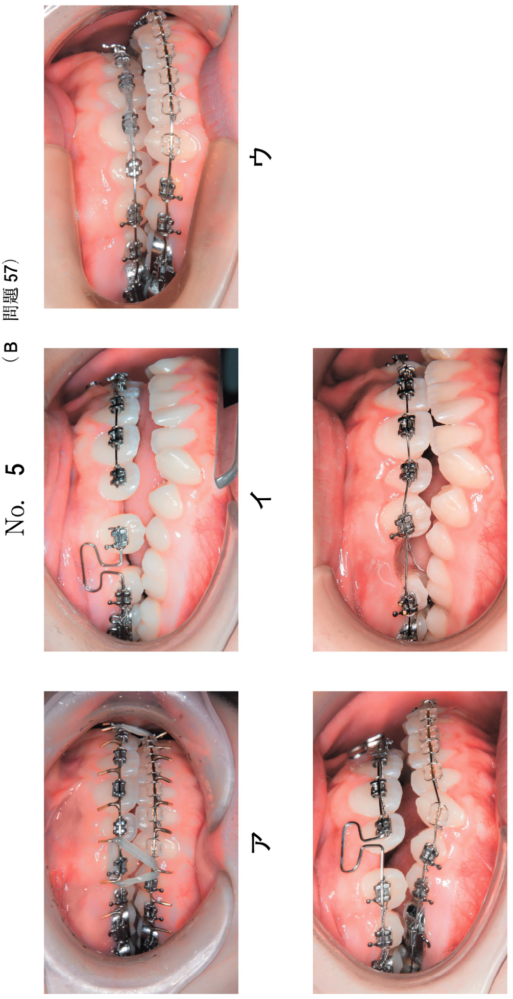
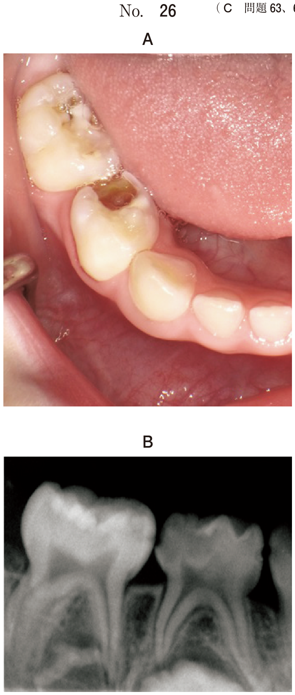
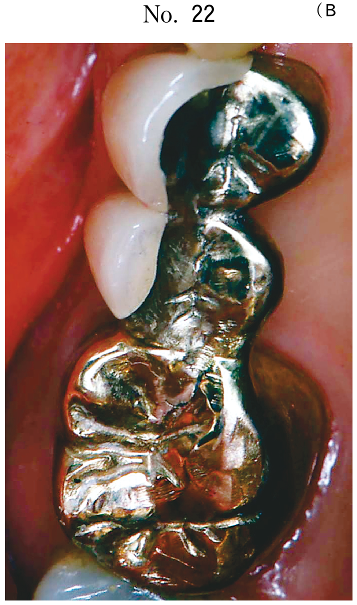
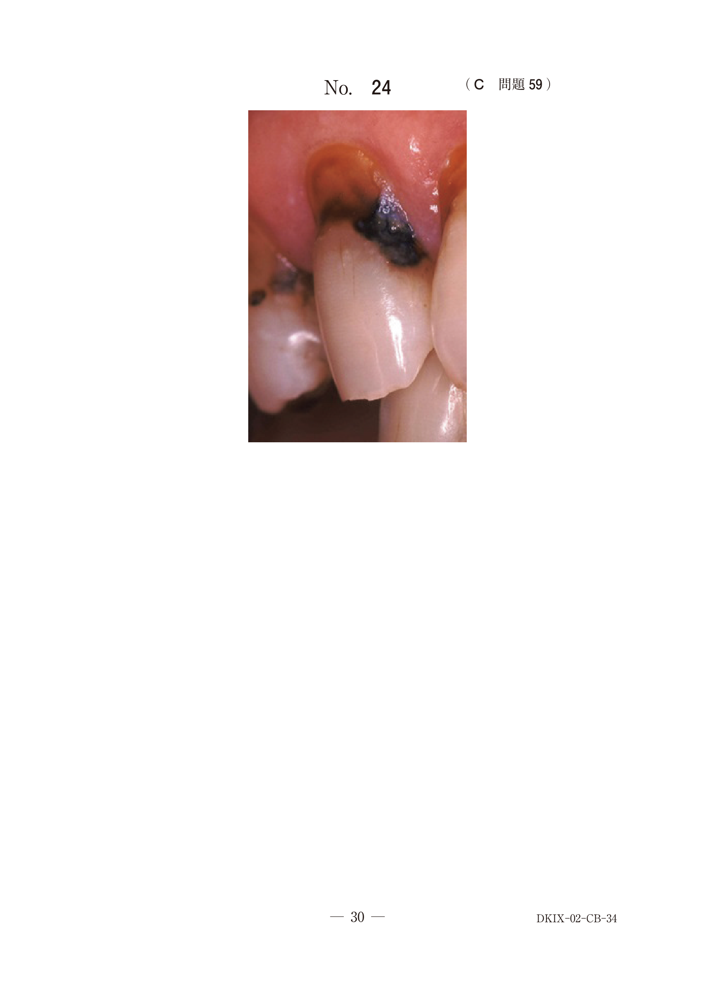

歯の異常を伴う症候群
歯の異常と疾患の対応一覧
| 歯の異常 | 疾患 |
|---|---|
| 多数歯の先天欠如 | 無汗型外胚葉異形成症、先天性色素失調症 |
| 多数歯埋伏・萌出遅延 | 鎖骨頭蓋骨異形成症、大理石骨病 |
| 乳歯早期脱落 | 低フォスファターゼ症、Papillon-Lefèvre症候群 |
| 象牙質形成不全 | 骨形成不全症 |
| エナメル質形成不全 | エナメル質形成不全症、先天性表皮水疱症 |
| 歯周炎の随伴 | 低フォスファターゼ症、Papillon-Lefèvre症候群 |
| 過剰歯 | 鎖骨頭蓋骨異形成症、Gardner症候群 |
| 歯槽骨の形成不全 | 無汗型外胚葉異形成症 |
無汗型外胚葉異形成症
X連鎖劣性遺伝（男性に多い）。外胚葉由来組織の形成不全。
| 項目 | 内容 |
|---|---|
| 3主徴 | 無汗症、発毛不全（毛髪発育不全）、無歯症（多数歯先天欠如） |
| 皮膚 | 皮膚乾燥（汗腺の欠如） |
| 口腔所見 | 多数歯の先天欠如、歯槽骨の形成不全、円錐歯 |
| 注意点 | 体温調節障害（無汗のため体温上昇のリスク） |
大理石骨病（Albers-Schönberg病）
全身性骨硬化病変。常染色体劣性（先天型：重症）と常染色体優性（遅延型：軽症）がある。
| 項目 | 内容 |
|---|---|
| 骨所見 | 易骨折性（chalk bone）、大理石様エックス線不透過像 |
| 造血障害 | 骨髄腔の狭窄 → 貧血、出血傾向、肝脾腫 |
| 神経障害 | 脳神経圧迫 → 失明、顔面神経麻痺、難聴 |
| 口腔所見 | 歯の形成障害、萌出遅延、埋伏歯 |
| 注意点 | 血行が悪いため、齲歯・抜歯後の感染により顎骨骨髄炎が生じやすい |
低フォスファターゼ症
ALP（アルカリホスファターゼ）活性低下による遺伝性の代謝異常。
- 骨形成不全、歯槽骨の吸収
- エナメル質・セメント質形成不全
- 乳歯早期脱落（セメント質形成不全により歯根膜が結合できない）
- 歯周炎を随伴する
エナメル質形成不全症
エナメル芽細胞の障害によりエナメル質に限局して形成不全が発症する疾患。
- エナメル質の表面性状異常（萌出時からの変化なし）
- 象牙質・歯髄は正常
- 皮膚に異常は認めない
骨形成不全症
I〜IV型あり。先天性結合組織代謝異常。
- 易骨折性（反復性の病的骨折）、骨変形、低身長
- 象牙質形成不全（オパール様色沢歯冠、咬耗、短根、歯髄腔・根管の狭窄）
先天性表皮水疱症
機械的刺激部位に水疱、びらん形成を繰り返す。
- 瘢痕萎縮による開口障害、舌癒着
- エナメル質形成不全、多数歯齲蝕
Papillon-Lefèvre症候群
常染色体劣性遺伝。
- 掌蹠過角化と高度歯周疾患
- 乳歯・永久歯の早期脱落
過去問
歯の異常と疾患の組合せで正しいのはどれか。1つ選べ。
b 矮小歯 ーーーーーーーー 鎖骨頭蓋骨異形成症
c 先天欠如 ーーーーーーー 骨形成不全症
d 乳歯早期脱落 ーーーーー 低フォスファターゼ症
e 象牙質形成不全 ーーーー 先天性外胚葉異形成症
【解説】低フォスファターゼ症ではALP活性低下によりセメント質形成不全が生じ、乳歯早期脱落（d）が起こる。a：Down症候群は過剰歯ではなく歯の萌出遅延。b：鎖骨頭蓋骨異形成症は多数歯埋伏であり矮小歯ではない。c：骨形成不全症は象牙質形成不全であり先天欠如ではない。e：外胚葉異形成症は多数歯先天欠如であり象牙質形成不全ではない。
3歳の男児。歯の萌出遅延を主訴として来院した。初診時の口腔内写真（別冊No.8）を別に示す。疑われる疾患に合併する症状はどれか。2つ選べ。

b 表皮水疱
c 皮膚乾燥
d 多数歯埋伏
e 毛髪発育不全
【解説】3歳男児で歯の萌出遅延（多数歯先天欠如）→ 外胚葉異形成症。外胚葉異形成症の3主徴は無汗症・発毛不全・無歯症。皮膚乾燥（c＝無汗による）と毛髪発育不全（e）が合併症状。a（多発骨折）は骨形成不全症。d（多数歯埋伏）は鎖骨頭蓋骨異形成症。
13歳の男子。食事がしづらいことを主訴として来院した。精神発達は正常である。初診時の口腔内写真（別冊No.30A）とエックス線画像（別冊No.30B）を別に示す。疑われるのはどれか。1つ選べ。

b 先天性表皮水疱症
c Robin シークエンス
d 鎖骨頭蓋骨異形成症
e 先天性外胚葉異形成症
【解説】13歳男子で多数歯欠如、歯槽骨の形成不全がみられる。精神発達は正常 → 先天性外胚葉異形成症（e）。a（骨形成不全症）は象牙質形成不全・易骨折性。d（鎖骨頭蓋骨異形成症）は多数歯埋伏であり欠如ではない。
多数歯の先天欠如を伴う疾患はどれか。2つ選べ。
b 軟骨無形成症
c 先天性表皮水疱症
d 先天性色素失調症
e 無汗型外胚葉異形成症
【解説】多数歯の先天欠如を伴うのは先天性色素失調症（d）と無汗型外胚葉異形成症（e）。a（骨形成不全症）は象牙質形成不全。b（軟骨無形成症）は低身長・四肢短縮。c（先天性表皮水疱症）はエナメル質形成不全。
疾患と症状の組合せで正しいのはどれか。2つ選べ。
b 先天性表皮水疱症 ——— 多数の埋伏歯
c 鎖骨頭蓋骨異形成症 —— エナメル質減形成
d 無汗型外胚葉異形成症 — 歯槽骨の形成不全
e 先天性甲状腺機能低下症 — 巨 舌
【解説】無汗型外胚葉異形成症では歯槽骨の形成不全（d）がみられる。先天性甲状腺機能低下症（クレチン症）では巨舌（e）がみられる。a：骨形成不全症は易骨折性であり開口障害ではない（開口障害は先天性表皮水疱症）。b：先天性表皮水疱症は開口障害であり埋伏歯ではない。c：鎖骨頭蓋骨異形成症は多数歯埋伏であり、エナメル質減形成ではない。
歯周炎を随伴する遺伝疾患はどれか。2つ選べ。
b Peutz-Jeghers症候群
c 低フォスファターゼ症
d von Recklinghausen病
e Papillon-Lefèvre症候群
【解説】低フォスファターゼ症（c）はALP活性低下によりセメント質形成不全を起こし歯周炎を随伴する。Papillon-Lefèvre症候群（e）は掌蹠過角化と高度歯周疾患が主症状。a（Sturge-Weber）は顔面血管腫。b（Peutz-Jeghers）は色素斑＋消化管ポリポーシス。d（von Recklinghausen病）は神経線維腫。
15歳の女子。飲水時の上顎臼歯部における疼痛を主訴として来院した。歯の表面性状は萌出してから変化はないという。皮膚に異常は認められない。初診時の口腔内写真（別冊No.9A）とエックス線画像（別冊No.9B）を別に示す。診断名はどれか。1つ選べ。

b 歯のフッ素症
c 先天性表皮水疱症
d エナメル質形成不全症
e 先天性外胚葉異形成症
【解説】「歯の表面性状は萌出してから変化はない」＋「皮膚に異常なし」→ エナメル質に限局した先天的な形成不全 = エナメル質形成不全症（d）。b（歯のフッ素症）は斑状歯で後天的。c（先天性表皮水疱症）は皮膚の水疱を伴う。e（外胚葉異形成症）は皮膚乾燥・発毛不全を伴う。
14歳の男子。食物が噛みにくいことを主訴として来院した。3歳から義歯を使用しており、何度も調整と新製を繰り返しているという。弟にも同様の所見がある。診察の結果、義歯を新製することとした。初診時の口腔内写真（別冊No.36A）とエックス線画像（別冊No.36B）を別に示す。治療に際して特に留意すべきなのはどれか。1つ選べ。

b 頸椎脱臼
c 体温上昇
d 下顎骨骨折
e てんかん発作
【解説】3歳から義歯使用（多数歯先天欠如）＋弟にも同様（遺伝性）→ 外胚葉異形成症。外胚葉異形成症では無汗症により体温調節障害があるため、治療に際して体温上昇（c）に特に留意する必要がある。
59歳の女性。下顎左側臼歯部の疼痛を主訴として来院した。疼痛は1年前に抜歯してから持続しているという。同部の骨の露出、視力障害、聴力障害および貧血を認める。初診時の口腔内写真（別冊No.27A）とエックス線写真（別冊No.27B、C）とを別に示す。疑われるのはどれか。1つ選べ。

b 骨性異形成症
c 腎性骨異栄養症
d 線維性異形成症
e Gardner症候群
【解説】抜歯後の治癒不全（骨露出）＋視力障害＋聴力障害＋貧血 → 大理石骨病（a）。大理石骨病では骨硬化により骨髄腔が狭窄し造血障害（貧血）が生じ、脳神経圧迫により失明・難聴が起こる。血行不良のため抜歯後に顎骨骨髄炎を生じやすい。
59歳の女性。抜歯後の治癒不全を主訴として来院した。 2か月前、近医で上顎左側第二小臼歯を抜去したという。貧血の既往がある。上顎左側に疼痛と腫脹を認める。初診時の口腔内写真（別冊No.34A）、エックス線画像（別冊No.34B）及びCT（別冊No.34C）を別に示す。治癒不全の発症に関与すると考えられるのはどれか。1つ選べ。

b 大理石骨病
c 線維性異形成症
d 基底細胞母斑症候群
e 副甲状腺機能亢進症
【解説】抜歯後の治癒不全＋貧血の既往＋エックス線で骨硬化像 → 大理石骨病（b）。大理石骨病では血行が悪いため抜歯後に顎骨骨髄炎を起こしやすく、治癒不全となる。a（骨粗鬆症）は骨密度低下で骨硬化ではない。